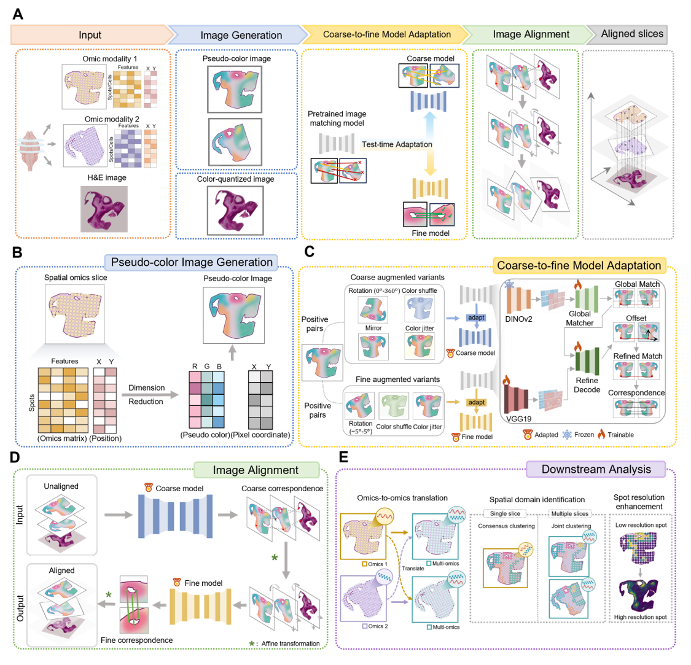

SpaMOMA
Unifying and aligning spatial multi-omics slices via image-based feature matching
📚 Tutorials
- Installation
- API
- Tutorial 1: Aligning eight spatial transcriptomics slices of mouse hippocampus
- Tutorial 2: Aligning spatial transcriptomics slices of mouse olfactory bulb
- Tutorial 3: Aligning spatial transcriptomics data and spatial epigenomics data of mouse coronal brain slices
- Tutorial 4: Aligning spatial transcriptomics data and spatial proteomics data of mouse thymus slices
- Tutorial 5: Aligning spatial transcriptomics data to spatial metabolomics data of mouse brain slices
- Tutorial 6: Aligning spatial transcriptomics data to H&E image of human breast cancer data from Xenium
- Tutorial 7: Aligning spatial transcriptomics, spatial epigenomics data and H&E image of mouse embryonic brain data from MISAR-seq
🔎 Overview

Simultaneous spatial profiling of multiple omics within the same cell or spot offers unprecedented opportunities to dissect spatiotemporal interplay among different omics, and to decode molecular properties in microenvironments. However, direct co-profiling of spatial multi-omics faces challenges due to limited sample input, signal crosstalk, and the trade-off between spatial resolution and omics coverage. Profiling different omics from consecutive tissue slices offers a practical alternative but introduces challenges to accurately align distorted slices across modalities.
Here, we present SpaMOMA, a computational framework for unpaired spatial multi-omics slice alignment. SpaMOMA designs a coarse-to-fine alignment strategy based on test-time adaptation to tailor image feature matching model to spatial pattern images, enabling automated and high-precision alignment without manual landmarks or matched features across different omics.
Extensive benchmarks across diverse spatial omics datasets and histology images demonstrate that SpaMOMA:
Resolves global orientation ambiguities
Achieves accurate local alignment
Consistently outperforms existing alignment methods
Beyond spatial alignment, SpaMOMA facilitates downstream analyses including:
📍 Coordinate-based omics-to-omics translation
🧬 Multi-omics spatial domain identification
🔬 Histology-guided spot resolution enhancement
This scalable and robust framework lowers technical barriers for unpaired spatial multi-omics integration and paves the way for comprehensive multimodal tissue analysis.
✉️ Contact
If you have any questions or need support, please feel free to contact:
Jianxing Zhang
📩 24126421@bjtu.edu.cn